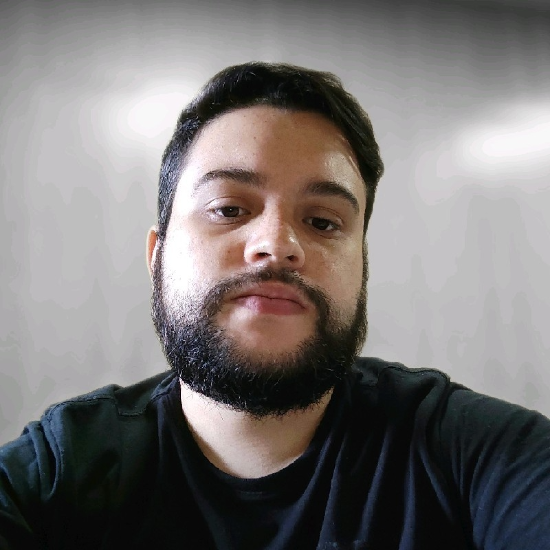

Caio Souza
Desenvolvedor de Sistemas
Contato
- +55 2197427-0531
- caio.alberto@gmail.com
- capsxy.github.io
- capsxy
Skills
HTML5 | CSS3 | JavaScript
Java | Firebase
Python | Django
Excel | PowerBI
Windows Server | Linux
Git | GitHub
PostgreSQL | MySQL
AWS | Azure | GCP